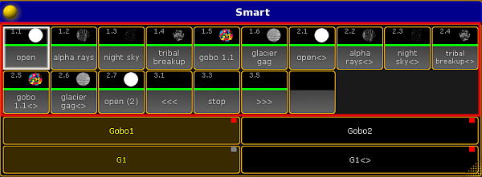

Using The Smart View
The smart view displays default-defined channel sets of an attribute. These channel sets are stored in the library.
Open the Smart View
Important:
To see the default-defined channel sets of a fixture in the smart view, select a fixture and tap a preset in the
preset control bar first.
To open the smart view:
- Tap anywhere in the user-defined area.
- The pop-up Create Basic Window opens.
- Next, tap Other.
- Then, tap Smart.
- The window Smart opens.
Smart View – Gobo
Hint:
The smart view displays all default channel sets of attributes in a neat way. It basically facilitates your working steps.
Channel Sets
The tiles marked by a red box are channel sets.

Channel Sets Marked by a Red Box
It is possible to create a new channel set. To do so:
- Assign a value to the attribute that is currently in the programmer.
- Press Store and then tap the empty tile.
- Next, label it and press Please.
Smart View – New Channel Set
Important:
The new channel set applies to all fixtures of this fixture type.
Hint:
Creating a new channel set directly in the smart view is more efficient than editing in numerous steps via Setup.
Features
The fields Gobo1 and Gobo2 marked by a red box in the smart view display features of a preset type.
Smart View – Features
Attributes
The fields G1 and G1 <> marked by a red box display the attributes of the features.
Smart View – Attributes
Options
To open the options in the smart view, tap  in the upper left corner of the window. The dialog Smart Options opens.
in the upper left corner of the window. The dialog Smart Options opens.
Smart View – Options
If you tap Symbols, the pop-up Select Symbols opens displaying the following:
No Symbols:
Does not display symbols in the corresponding tiles of the channel sets.
Small Symbols:
Displays symbols in small.
Big Symbols:
Displays symbols in big.
To close the options, tap  in the upper right corner.
in the upper right corner.
Close the Smart View
To close the smart view altogether, tap in the upper left corner of the dialog and tap Delete Window.